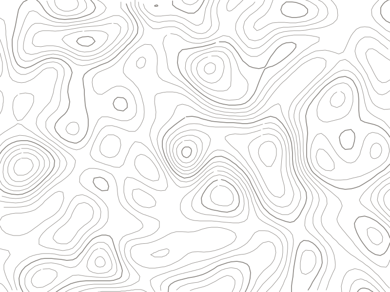

41.7558° N · 124.2026° W · NORTH COAST, CALIFORNIA
Maps that answer real questions about land.
Soil-suitability reports for land buyers, custom maps and interactive web maps for businesses, and plain-English QGIS lessons for beginners.
What you can get here
Hire a mapmaker, buy a map, or learn to make your own.
Map Lab
Drop a pin on any property and request a report.
The Map Lab is where interactive tools live. Click a spot on the map, and the coordinates go straight into your request, so I know exactly which land you mean.
- Find the landSearch an address or click the map.
- Send the requestPick a report size. Your pin comes along.
- Get your mapsA PDF report and map files, usually within 3–5 days.
Who’s behind the maps
Hi, I’m Rob Montini.
I’m a GIS and cartography student in Crescent City, California. I build maps in QGIS and ArcGIS Pro: soil and land analysis, trail and park maps, 3D terrain, and StoryMaps. I also teach beginners through GIS Made Simple, so every report I send comes with plain-English explanations.

Have a parcel, a project, or a question?
Tell me what you need. Quotes are free, and I reply within one business day.